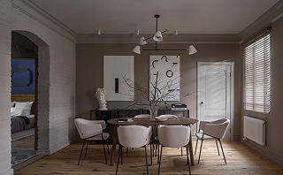
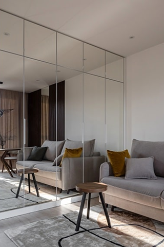
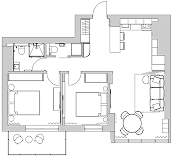
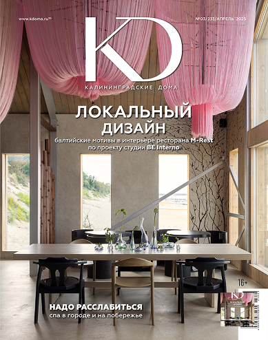

Дизайнер Ольга Зайцева добавила в двухуровневую квартиру

Город
Калининград
Площадь
50 м.кв.
Кол-во комнат
3
Фото
Сергей Мельников
Стиль
Сергей Мельников
Текст
Ольга Синявская
Ольга Зайцева
Архитектор
Реклама Дозорец Екатерина Владиславовна ИНН 390802646115 Erid: 2SDnjbxPaKn

Реклама Дозорец Екатерина Владиславовна ИНН 390802646115 Erid: 2SDnjbxPaKn

Надо было очень тщательно рассчитать несущую способность конструкции и ювелирно вписать в пространство винтовую лестницу, чтобы она была удобной для подъема и при этом не занимала много места. Высота антресоли предполагает, что взрослый человек может встать здесь в полный рост. Больше всего хлопот доставил антресольный этаж. Надо было очень тщательно рассчитать несущую способность конструкции и ювелирно вписать в пространство винтовую лестницу, чтобы она была удобной для подъема и при этом не занимала много места. Высота антресоли предполагает, что взрослый человек может встать здесь в полный рост. Больше всего хлопот доставил антресольный этаж. Надо было очень тщательно рассчитать несущую способность конструкции и ювелирно вписать в пространство винтовую лестницу, чтобы она была удобной для подъема и при этом не занимала много места. Высота антресоли предполагает, что взрослый человек может встать здесь в полный рост. Больше всего хлопот доставил антресольный этаж. Надо было очень тщательно рассчитать несущую способность конструкции и ювелирно вписать в пространство винтовую лестницу, чтобы она была удобной для подъема и при этом не занимала много места.
Квартиру в Пионерском семья с Чукотки приобрела в качестве летней резиденции на море с перспективой предлагать ее для посуточной аренды. — Несмотря на то, что квартира двухуровневая, общая площадь небольшая, порядка 50 «квадратов», — рассказывает дизайнер Ольга Зайцева. — Конечно же, хозяева были заинтересованы в увеличении полезных метров. Первый этаж мы расширили, присоединив лоджию к кухне-гостиной, а высота второго (около пяти метров) позволила спроектировать антресоль, организовав на ней спальню. Надо было очень тщательно рассчитать несущую способность конструкции и ювелирно вписать в пространство винтовую лестницу, чтобы она была удобной для подъема и при этом не занимала много места. Высота антресоли предполагает, что взрослый человек может встать здесь в полный рост. Больше всего хлопот доставил антресольный этаж. Надо было очень тщательно рассчитать несущую способность конструкции и ювелирно вписать в пространство винтовую лестницу, чтобы она была удобной для подъема и при этом не занимала много места. Высота антресоли предполагает, что взрослый человек может встать здесь в полный рост. Больше всего хлопот доставил антресольный этаж. Надо было очень тщательно рассчитать несущую способность конструкции и ювелирно вписать в пространство винтовую лестницу, чтобы она была удобной для подъема и при этом не занимала много места. Высота антресоли предполагает, что взрослый человек может встать здесь в полный рост. Больше всего хлопот доставил антресольный этаж. Надо было очень тщательно рассчитать несущую способность конструкции и ювелирно вписать в пространство винтовую лестницу, чтобы она была удобной для подъема и при этом не занимала много места.
Второй этаж спроектирован под чилаут-зону. — Мы хотели создать максимально расслабляющую атмосферу, — поясняет Ольга, — поэтому выбрали светлую цветовую палитру, которая настраивает на отдых днем, и предусмотрели множество подсветок, создающих романтичное настроение вечером.Планируется наделить второй этаж еще одной функцией — кинозала, в скором времени здесь появится проектор с выводом изображения на белую стену или экран. Больше всего хлопот доставил антресольный этаж. множество подсветок, создающих романтичное настроение вечером.Планируется наделить второй этаж еще одной функцией — кинозала, в скором времени здесь появится проектор с выводом изображения на белую стену или экран. Больше всего хлопот доставил антресольный этаж.
План
- Ванна
- Кухня
- Спальня
- Гостинная
- Холл

Участники проекта
- лепнина, жалюзи — InterioRRoom;
- паркетная доска — «СБР студио»;
- краска — Desan;
- кухня — «Арт Интерьер»;
- кровать — «Арт Флекс»;
- стулья — divan.ru;
- плитка в ванной — ТД «Строитель»;
- плитка на полу кухни — «Керасфера»;
- двери — «Два брата»;
- стол — Lagom Home;
- бра на кухне — «Бауцентр»;
- ванна — OZON;
- розетки, технический свет — «Западный город»;
- лепнина, жалюзи — InterioRRoom;
- консоли, тумба с раковиной в ванной — IKEA;
- шторы, декор — Leroy Merlin.
